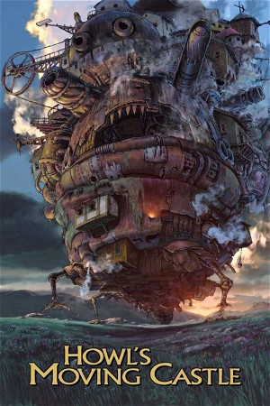

Howl's Moving Castle (2004)
AdventureAnimationFantasy
| Year | 2004 |
|---|---|
| Rating | US:PG / US:Rated PG |
| Genre | Adventure, Animation, Fantasy |
Sophie, a young milliner, is turned into an elderly woman by a witch who enters her shop and curses her. She encounters a wizard named Howl and gets caught up in his resistance to fighting for the king.